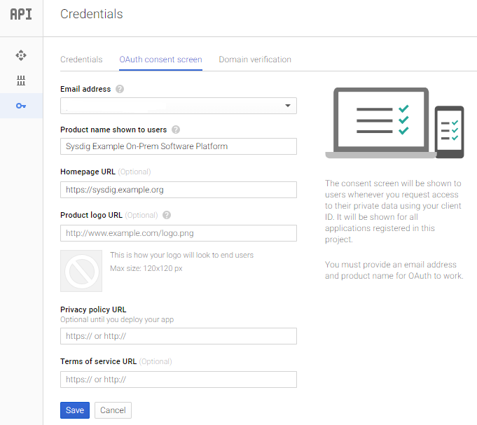
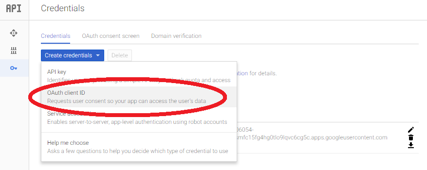
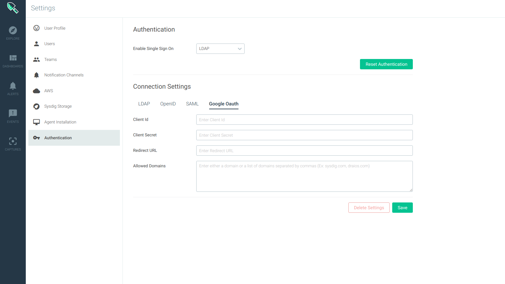
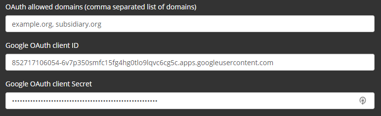
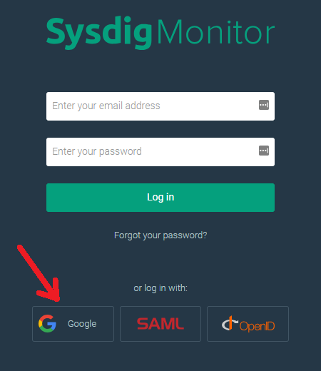

Google OAuth (On-Prem)
Note
These instructions are specific to On-Premises Deployments of the Sysdig platform. If you are using the cloud-based (SaaS) Sysdig platform, refer to Google OAuth (SaaS) instead.
Google supports OAuth 2.0, which allows users to log in to third-party applications such as Sysdig using Google credentials. By default, the created user will not have Admin rights within the Sysdig application, though these rights can be subsequently assigned.
Prerequisites
The Sysdig platform on-premises installation must have a DNS name associated with it. Google does not support applications that do not have an associated DNS name.
DNS Name
Replicated
For Replicated-based installations, enter your Hostname in the Settings tab.
Kubernetes
For Kubernetes-based installations, ensure the api.url ConfigMap element contains your hostname.
For the examples that follow, DNS_NAME refers to this hostname you configured in your platform settings.
In Google Console: Obtain OAuth Client Credentials
Log in to the Google API Console.
Select
Credentialsfrom the left-hand navigation, and choose theOAuth consent screentab.Enter the required Email address and Product name, as well as other additional optional information, then click
Save. From the
Credentialstab, click theCreate Credentialsdrop-down and selectOAuth client ID. When prompted for Application type, select Web application, then enter the following parameters:
Name: Use a meaningful name, such as "Sysdig".
Authorized Javascript Origins: Enter
https://DNS_NAME:API_PORTAuthorized Redirect URLs: Enter one or more of the following values:
If configuring Sysdig Monitor, enter:
https://DNS_NAME:API_PORT/api/oauth/google/authIf configuring Sysdig Secure, enter:
https://DNS_NAME:API_PORT/api/oauth/google/secureAuth
Click
Create.A success message with client ID and client secret will be displayed. Copy these to a safe place, as you will need them in the next step.

Configure Settings in Sysdig
There are three options for configuring OAuth settings on the Sysdig side: a UI page (for Monitor only), scripts (both products), or entries in your Replicated or Kubernetes orchestrator (both products).
Option 1 UI-Based: Configure Google OAuth in Settings (Monitor Only)
At this time, the Authorization UI is available only for Sysdig Monitor.
To enable baseline Google Oauth functionality:
Enter Google OAuth Basic Settings
Log in to Sysdig Monitor or Sysdig Secure as "super" Admin and select
Settings.
Select
Authentication.Select the
Google OAuthtab. Enter the relevant parameters and click
Save.Application ID: the Client ID you were sent.
Application Secret: the Client Secret you were sent
URL Redirect:
If configuring Sysdig Monitor, enter:
https://DNS_NAME:API_PORT/api/oauth/google/authIf configuring Sysdig Secure, enter:
https://DNS_NAME:API_PORT/api/oauth/google/secureAuthAllowed Domains: Comma-separated list of domains permitted to log in. For example, mycompany.com, myxompanyalias.com.
Select Google OAuth for SSO
Select
Google Oauthfrom theEnabled Single Sign-OndropdownClick
Save Authentication.Repeat for Sysdig Monitor or Sysdig Secure, if you want to enable on both applications.
Option 2 Script-Based: Configure OAuth Using Scripts (Monitor or Secure)
The configuration of the Google OAuth feature can be viewed, updated, and deleted by the "super" Admin. A google_oauth_config.sh helper script is available in the SSO folder at sysdig-cloud-scripts repository to assist in completing this configuration. Invoking the script with no options will display help text.
# ./google_oauth_config.sh -h Usage: ./google_oauth_config.sh [OPTIONS] Affect Google Oauth login settings for your Sysdig software platform installation
To use the helper script, modify env.sh to set the required values for API_TOKEN of the "super" Admin user and the URL for accessing the Sysdig platform API (which will be the same URL that your users access for the Sysdig Monitor application).
Depending if the API_TOKEN has been obtained from the Sysdig Monitor or Sysdig Secure application UI, the settings will be applied to the consequent product.
Initially no Google Oauth settings are set. A initial run of the script would confirm that:
# ./google_oauth_config.sh No google-oauth settings are set Run for further info: ./google_oauth_config.sh -h
Add the -s option to set the Google Oauth configuration for a particular Sysdig application. When setting the config, you'll use additional options to provide the config details you saved in the earlier Google Oauth step.
Config Detail | Option |
|---|---|
Client ID | |
Client Secret | |
Allowed Domains | |
Redirect URL | |
If the configuration is successfully posted to the Sysdig platform, the new configuration will be echoed back.
Note
Depending if the API_TOKEN has been obtained from the Sysdig Monitor or Sysdig Secure application UI, the settings will be applied to the relevant product.
# ./google_oauth_config.sh -s -i "t2em0alq7l13n1hevua48ehieenkb06q.apps.googleusercontent.com" -e "ucP_WY908-k" -r "https://sysdigtest.com:443/api/oauth/google/auth" -a "[\"sysdig.com\"]"
{
"authenticationSettings": {
"id": 1,
"version": 1,
"createdOn": 1547709552000,
"type": "google-oauth",
"scope": "SYSTEM",
"settings": {
"clientId": "t2em0alq7l13n1hevua48ehieenkb06q.apps.googleusercontent.com",
"clientSecret": "ucP_WY908-k",
"redirectUrl": "https://sysdigtest.com:443/api/oauth/google/auth",
"allowedDomains": [
"sysdig.com"
]
}
}
}Once you've completed this configuration, clicking the Google Login button at the login screen of the appropriate Sysdig application(s) should redirect to Google Oauth login page.
If you wish to delete your Google Oauth configuration, invoke the -d option. If successful, the disabled configuration will be printed.
# ./google_oauth_config.sh -d
{
"authenticationSettings": {
"id": 1,
"version": 1,
"createdOn": 1547709552000,
"type": "google-oauth",
"scope": "SYSTEM",
"settings": {
"clientId": "t2em0alq7l13n1hevua48ehieenkb06q.apps.googleusercontent.com",
"clientSecret": "ucP_WY908-k",
"redirectUrl": "https://sysdigtest.com:443/api/oauth/google/auth",
"allowedDomains": [
"sysdig.com"
]
}
}
}Option 3 Orchestrator-Based: Enter Settings Using Orchestrator (Monitor or Secure)
Replicated
If you used the Replicated infrastructure manager to install the Sysdig platform:
Log in to the Replicated Management Console, click to the
Settingstab, then check the box to expand theAdvanced Settings.Enter the
Google OAuth client IDandGoogle OAuth client Secretin the appropriate fields.(Optional) In a comma-separated list, enter the
OAuth-allowed email domainsthat should be permitted to authenticate. If set, only Google users whose email addresses are in these domains will be able to login to your Sysdig installation. If this setting is left blank, any user that successfully authenticates via Google will be permitted to login to your Sysdig installation.Click
Save.The Sysdig platform will then restart to enable the settings.
Kubernetes
Enter the OAuth allowed domains, Client ID, and Client Secret into the appropriate elements of the Kubernetes ConfigMap. Use appropriate Kubernetes methods to push the updated settings and restart the backend containers to make the changes take effect.
|
User Experience
Note the following requirements for successful Google OAuth login:
Warning
The user must have already logged in successfully at least once to your environment (such as via email-based Invitation and having set an initial password)
The user's login username in the Sysdig platform must precisely match the user's Google email address (that is, it cannot be a shortened/altered Google email alias)
For such a user to log in via Google OAuth, click the Log in with Google button.
|  |
Note
If the user's browser has not already successfully authenticated via Google and/or has multiple Google profiles known by their browser, they will be presented a Google page to select a profile and enter a password (if necessary) before being redirected back to your Sysdig environment.
See also User and Team Administration for information on creating users.